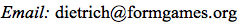

Ph.D.
Architecture, The University of Tokyo, 2012
"A Generative Approach to Architectural Form
using Design Constraint Systems
—
Case Studies in Vernacular Compounds in Burkina Faso"
Fahlenkampsweg 31
23562 Lübeck
Germany
+49 170 699 56 90

Computer Scientist specializing in Artificial Intelligence and Artificial Neural Networks (Deep Learning). Research and software development in natural language and music processing, image recognition, and computational design. Lived and worked in Germany, Japan, France, and Italy.
Operating Systems: macOS, Unix, Linux, Windows.
Programming Languages: C, C++, Python, Jython, Lisp, Clojure, Java, Prolog, Constraint Programming, Perl, Julia, Lua, PHP, JavaScript, XML, DTD, XSD, XSLT, HTML, CSS, SQL, and others.
Deep Learning: PyTorch, Keras, TensorFlow, and others.
Computer Music: Max, JUCE, Ableton Live, and others.
Architecture: BIM (Building Information Modeling), Revit, Revit plugin development, and others.
Colfeggio — a system for optical music recognition (OMR) based on deep learning. Experimenting with the application of deep learning to the automatic recognition of musical scores. Ongoing project, NewSkyLabs, Lübeck, since May 2018.
Collagen — a Python image augmentation library for deep learning. Using image augmentation to generate image datasets for optical music recognition (OMR). Ongoing project, NewSkyLabs, Kamakura, since Nov. 2017.
Synaptic — a patch based visual audio programming language for physical modelling sound synthesis. Development of the visual audio programming language Synaptic based on a physical modelling sound synthesis paradigma and inspired by Max and Pure Data. The development is based on the cross-platform C++ audio application framework JUCE. Ongoing project, NewSkyLabs, Kamakura, since July 2017.
BIM Modeling and BIM Software Development. Introducing Computational Design and Building Information Modeling (BIM) as new contemporary approaches to architectural design; Revit plugin development (Revit, C++). INVISIBLE design inc., Zushi, 2016–2018.
Numerical Sound Synthesis. Experiments with the physical simulation of musical instruments for the synthesis of sound. Ongoing project, NewSkyLabs, Kamakura, since June 2015.
Computational fluid dynamics (CFD) research and software development in C and C++, Explosion Research Institute Inc., Tokyo, 2013–2014.
Design constraint systems (DCS) — combining formal grammars and evolutionary computation for architectural design experimentation. Blender plugin development in C, C++ and Python; extension of the design constraint based optimisation framework developed during my Ph.D. research. postdoctoral research, The University of Tokyo, 2012–2014.
Electronic publishing and information design consultancy, research associate, Institute for Information Design Japan (IIDj), Tokyo, since 2010.
Research about the automatic generation of text layout for the world wide web and development of an XSL based generative layout system, Institute for Information Design Japan (IIDj), Tokyo, 2010–2011.
Design and development of a web-based social network (Zend Framework, PHP, Doctrine, MySQL, JavaScript, JQuery), Darren Software Development, Tokyo, 2009–2010.
Web design and programming, development of a browser-based file server (PHP, JavaScript, JQuery, Prototype, XHTML, CSS, MySQL, PostgreSQL, Zend Framework), br@in, Tokyo, 2008–2009.
Web design and programming, Software development and consultancy, Wordpress and Drupal plugin development using PHP, JavaScript, MySQL and CSS, Tokyo, 2007–2008.
Java enterprise application programming and evaluation, Development of an agent-based test environment for a java message service (JMS) communication layer for a trading system, software development using Java, Jython, JMS, C, C++ and Perl, TradingScreen, Tokyo, 2005–2007.
Formgames - generating and optimising architectural design with genetic algorithms, development of a Maya plugin in C++ for the evaluation and evolutionary optimisation of architectural design variants, Magaribuchi Laboratory, University of Tokyo, Japan, 2001–2005.
Research about the integration of symbolic and statistical approaches to the modelling of natural language, Tsujii Laboratory, University of Tokyo, Japan, 2000–2001.
Japanese / English / German translator, interpreter, and teacher, Japan, 2000–2018.
Modelling natural languages with recurrent neural networks, DEA course Cognitive Sciences, Laboratoire d'Informatique pour la Mécanique et les Sciences de l'Ingénieur (LIMSI), Orsay, France, 1991–1992.
Computational medical image analysis (image processing / computer vision), development of image analysis algorithms for image based medical research, Research Assistant, Medical Department, Free University Berlin, 1989–1990.
Grant of the International Kyowa Scholarship Foundation Japan, 2007–2009.
Japanese Government Scholarship - Monbu-Kagaku-Sho (Ministry of Education, Culture, Sports, Science and Technology) in assoziation with the German Academic Exchange Service (DAAD), 2000–2004.
Briand-Stresemann Scholarship - Senate of Berlin, Department of Science, Research and Culture, 1990–1991.